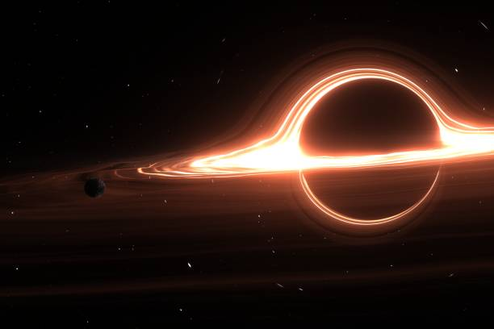

Buracos negros são regiões do espaço onde a gravidade é tão forte que nada consegue escapar, nem mesmo a luz.
Como Funcionam?
- Singularidade: É o centro do buraco negro, onde as teorias atuais preveem condições extremas de densidade e curvatura.
- Horizonte de Eventos: É a fronteira a partir da qual nada consegue escapar do buraco negro, nem mesmo a luz.
- Disco de Acreção: É formado por gás e poeira que orbitam o buraco negro em alta velocidade. O aquecimento dessa matéria pode emitir luz e raios X.

Tipos de Buracos Negros
- De massa estelar: Formados pelo colapso de estrelas, possuem algumas vezes a massa do Sol ou mais.
- Intermediários: Possuem massas entre as dos buracos negros estelares e as dos supermassivos.
- Supermassivos: Possuem milhões ou bilhões de vezes a massa do Sol e são encontrados nos centros de muitas galáxias.
- Primordiais (hipotéticos): Poderiam ter se formado no início do universo, mas ainda não foram confirmados.
Saiba mais sobre buracos negros no site da NASA .